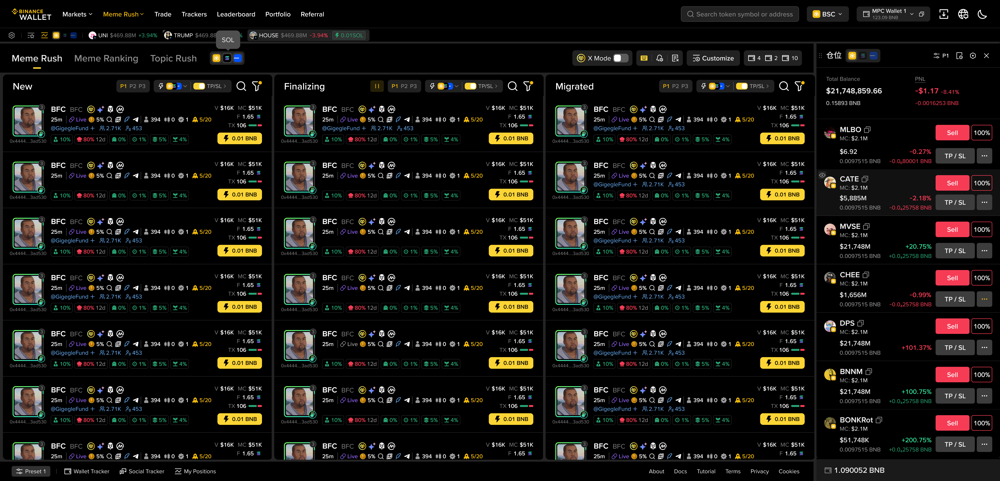
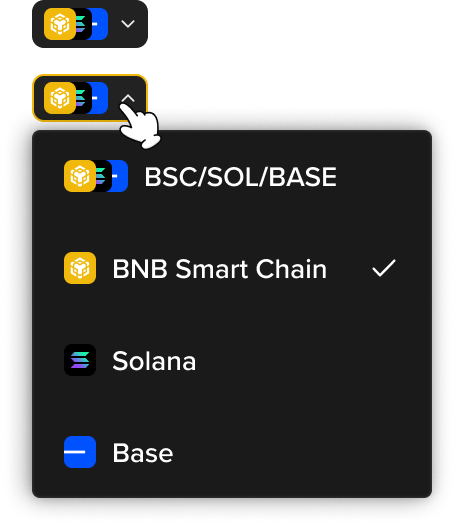
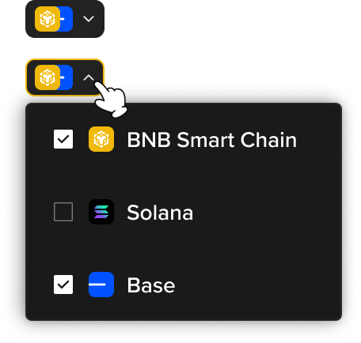

Meme Rush will support BSC / SOL / Base multi-chain trading on a single screen (Fusion Mode).
Users select which chains to display via checkbox chain selectors on the page (no separate "mode toggle" — just check/uncheck chains).
Option B (Checkbox Multi-Select) has been approved. This page covers the decision + how it affects each module.
With Fusion enabled, the page switches from a single-chain view to a multi-chain mixed view. Three lists (New / Finalizing / Migrated) display tokens from multiple chains simultaneously, and My Positions on the right aggregates cross-chain holdings.

Meme Rush page with Fusion Mode enabled (BSC + SOL + Base mixed view)
There are 3 entry points on the page to open the chain selector. They are globally synced — switching at any one instantly updates the others.
The core difference: Single-select (Radio) vs Multi-select (Checkbox). The selector UI and list filtering logic differ between the two options.

| Interaction | Select one chain, or select "BSC/SOL/BASE" for all-chain mode |
| Selection | ✓ marks current selection (mutually exclusive) |
| List | Single chain → shows only that chain's tokens; All chains → mixed view |
| QuickBuy | Single chain: 1 row / All chains: 3 rows (per-chain amount) |

| Interaction | Checkbox to select any combination of chains (1/2/3) |
| Selection | ☑ multi-select, at least 1 chain must remain checked |
| List | Displays tokens from whichever chains are checked |
| QuickBuy | Expands input rows based on number of checked chains |
These two components are reused across multiple modules. Understanding them is key to implementing the affected modules below.
| What | BSC / SOL / Base checkbox icons — users check which chains to display |
| Default | The currently globally selected chain is checked; saved to localStorage |
| Behavior | Click icon to check/uncheck. Checked = highlighted, unchecked = dimmed. Min 1 chain — last one cannot be unchecked (click has no effect) |
| Sync | All 3 entry points are globally synced — change at one, all others update instantly |
| Locations | Next to Meme Rush tab, My Position Bar, My Position Widget top |
| What | Chain icon tabs at the top of setting dialogs — only shows currently checked chains |
| Default | Highlights one checked chain by priority: BSC → SOL → Base |
| Behavior | Switch tab to view/edit that chain's settings. Each chain's config is independent and saved to localStorage |
| Reset | Only resets current chain's settings |
| Save | Saves settings for all chains at once |
| Uncheck | Unchecking a chain preserves its settings — restored when re-checked |
Below is how the checkbox chain selector and the chain switcher tab component impact each module. Core rule: each chain is independent — filters, Blacklist, Customize, Quickbuy presets, and TP/SL are all per-chain.
| Module | Impact from Chain Selector (Checkbox) |
| Token Lists New / Final / Migrated |
Only tokens from checked chains are shown, mixed and sorted cross-chain. Lists refresh in real-time when selection changes. Max 30 tokens per list across all checked chains. |
| Filter Dialog | Uses Chain Switcher tabs at top. Only shows tabs for checked chains. Each chain has independent filter criteria. SOL filters only apply to SOL tokens, BSC filters only to BSC tokens, etc. |
| Blacklist Dialog | Uses Chain Switcher tabs. Each chain has its own Blacklist. Quick-blocking from the token list (Handle / Dev / CA) adds to that token's chain Blacklist only. Market Blacklist is not affected. |
| Customize Dialog | Uses Chain Switcher tabs. Per-chain config for display fields, 2nd Quickbuy Button, etc. Exception: Table Layout is chain-agnostic — changes sync globally across all chains. |
| QuickBuy Amount + Preset |
Input expands to show rows for each checked chain (1 row per chain). Preset selector shows all chains' preset values. Preset config dialog uses Chain Switcher tabs. |
| TP/SL | TP/SL on/off toggle is stored per chain separately (independent from single-chain TP/SL state). TP/SL config dialog uses Chain Switcher tabs for per-chain strategy. |
| My Position Widget |
PnL panel shows rows for checked chains only (1 chain = single-chain layout, 2-3 chains = split rows). Token list merges holdings from checked chains, sorted by value. Position Settings and Order History use Chain Switcher tabs. |
| Watchlist / Position Bar |
Shows favorites and positions from checked chains only. Uses Chain Selector component for consistency. |
| Notification | No frontend change. All chains share one notification config. In multi-chain view, alert conditions are the union of all chains' conditions. |
| Balance | No change — excluded from Fusion scope. Users check balances via the multi-wallet component. |
Key boundaries to handle with the checkbox approach.
| Last chain checked | Cannot uncheck — clicking has no effect. Min 1 chain must always be selected. |
| Uncheck then re-check | All settings (Filter, Blacklist, Customize, Preset, TP/SL) are preserved in localStorage and restored when re-checked. |
| No wallet for chain | If user checks a chain but has no corresponding wallet, prompt to derive one. Newly derived wallet starts with 0 balance. |
| 1 chain checked | Functionally equivalent to single-chain view. UI still shows the checkbox selector for consistency — no separate "single-chain mode." |
| MemeRank / Topic Rush | These pages do NOT show the chain selector. They remain single-chain only. |